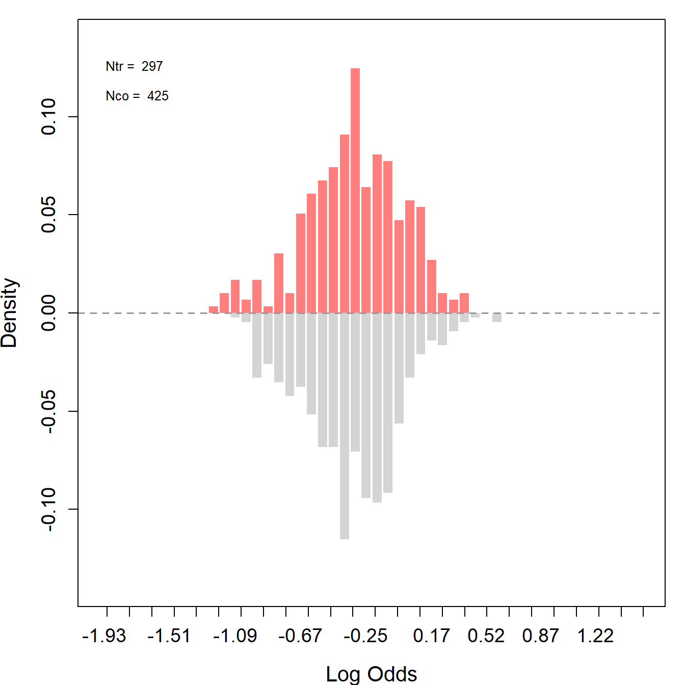
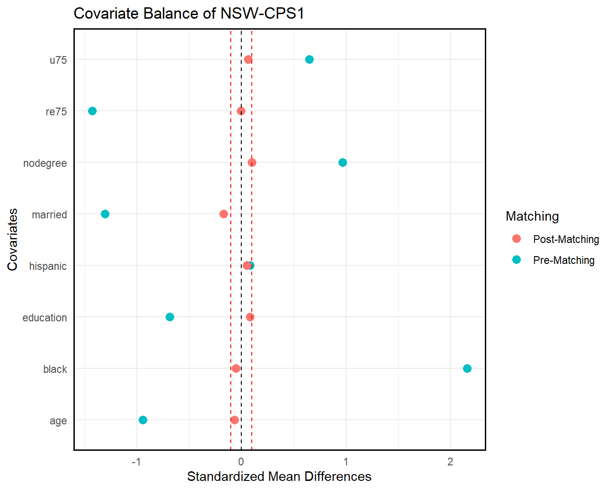
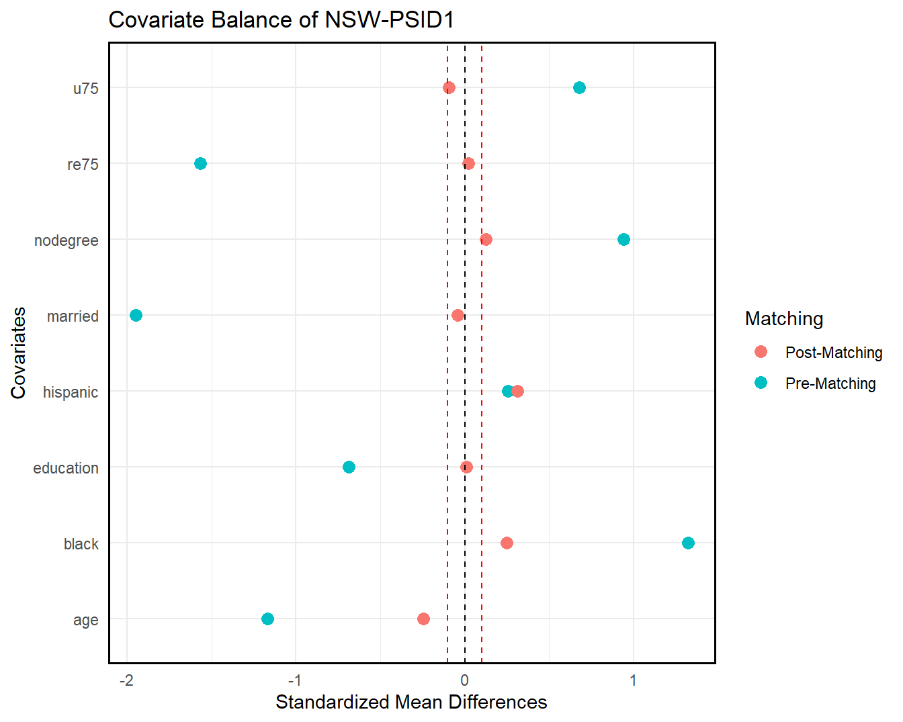
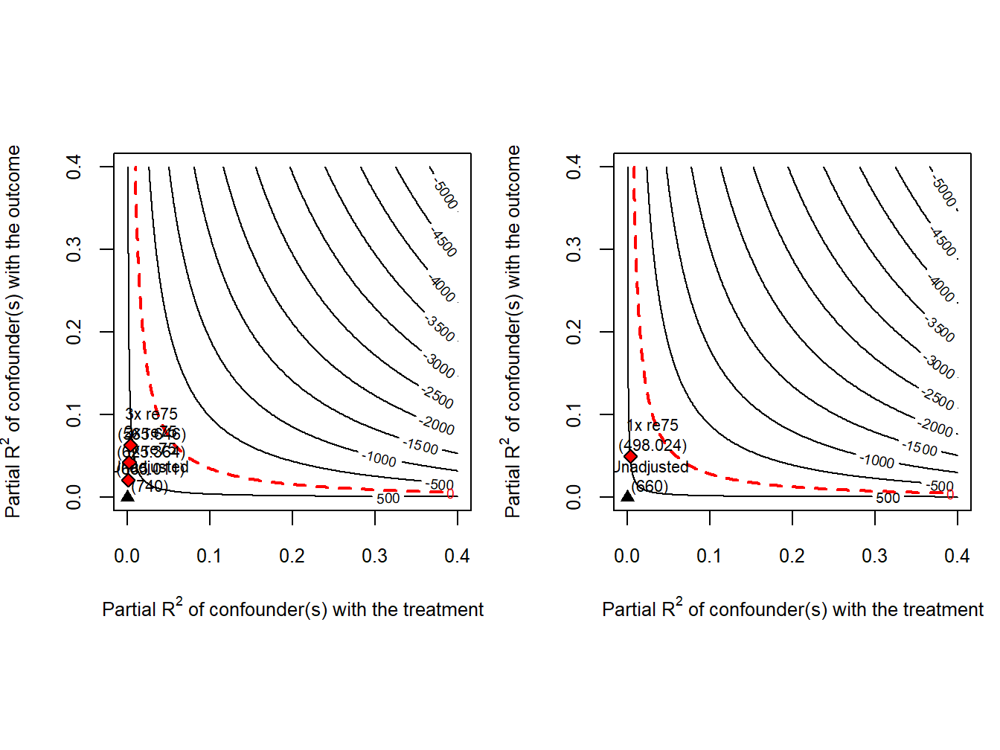

Code
# source the functions provided in part 1
source("https://github.com/xuyiqing/lalonde/blob/main/tutorial/functions.R?raw=TRUE")In this section, we will focus on the original LaLonde data set (loaded as NSW below) to assess the effect of the treatment (participation in the job training program) on the participants’ earnings in 1978.
First, the dataset is split into treatment and control groups by the treatment dummy. Note, two pretreatment variables (earnings in 1974 and employment status in 1974) are absent from this sample. We thus remove variables re74 (earnings in 1974), u74 (unemployment status in 1974), and tau (the treatment effect estimate) from the CPS-1 and PSID-1 datasets to match the structure of the treatment dataset.
# source the functions provided in part 1
source("https://github.com/xuyiqing/lalonde/blob/main/tutorial/functions.R?raw=TRUE")load("data/lalonde.RData")
load("data/trimmed.RData")
treat <- "treat"
nsw_co$treat <- 1
# drop re74, u74, tau from cps1 and psid1
cps1a <- subset(cps1, select = -c(re74, u74))
nsw_cps <- rbind.data.frame(nsw_tr, cps1a)
psid1a <- subset(psid1, select = -c(re74, u74))
nsw_psid <- rbind.data.frame(nsw_tr, psid1a)
nsw_cps.plus <- rbind.data.frame(nsw_cps, nsw_co)
nsw_psid.plus <- rbind.data.frame(nsw_psid, nsw_co)In this step, we define variables for the outcome (Y = “re78”), treatment indicator (treat), and covariates that include age, education, race/ethnicity indicators, marital status, degree status, and earnings in 1975.
Again, we assess overlap in covariate distributions between treated and control groups based on the propensity score via GRF (log odds ratio) for the LDW-Experimental, LDW-CPS1, and LDW-PSID1 data.
# define variables
Y <- "re78"
treat <- "treat"
covar <- c("age", "education", "black", "hispanic", "married", "nodegree", "re75", "u75")Figure: Experimental (male sample).
nsw_ps <- assess_overlap(data = nsw, treat = treat, cov = covar, xlim = c(-2, 1.5))
We then trim the data to improve overlap in covariate distributions by removing units with poor overlap based on the propensity score. This step aims to refine the datasets to improve later causal inference. With the trimmed data, we can reassess overlap for each group.
Like before, we start by assessing overlaps between the distributions of the treated and control groups based on log-odds derived from propensity scores.
Then, we proceed with trimming to improve the quality of the causal inference. After trimming, we would expect the distributions to align more closely - the treatment and control groups are more comparable according to their covariates.
trim <- function(data, ps = "ps_assoverlap", threshold = 0.9) {
sub <- data[which(data[, ps] < threshold), ]
return(sub)
}
#Trim
nsw_cps_trim <- trim(nsw_cps.plus_ps, threshold = 0.85)
nsw_psid_trim <- trim(nsw_psid.plus_ps, threshold = 0.85)
# cps data
# excluding the experimental controls
nsw_cps_trim_match <- subset(nsw_cps_trim, sample %in% c(0,3) & ps_assoverlap)
# re-estimate propensity scores and employ 1:1 matching
nsw_cps_trim_match <- psmatch(data = nsw_cps_trim_match, Y = "re78", treat = "treat", cov = covar)
# psid data
# excluding the experimental controls
nsw_psid_trim_match <- subset(nsw_psid_trim, sample %in% c(0,4) & ps_assoverlap)
# re-estimate propensity scores and employ 1:1 matching
nsw_psid_trim_match <- psmatch(data = nsw_psid_trim_match, Y = "re78", treat = "treat", cov = covar)The propensity scores are reestimated after trimming.The plots below show good overlaps especially in the center, indicating an improved balance and common support between the treated and control groups. The before-after trimming comparison suggests that the trim effectively removes units that were less comparable.

We can also check covariate balance directly by love.plot(). As shown in the following figures, covariate overlap improves significantly in both samples post-trimming (matching).
# cps data
love.plot(nsw_cps, nsw_cps_trim_match, treat = treat, covar = covar, title = "Covariate Balance of NSW-CPS1")
# psid data
love.plot(nsw_psid, nsw_psid_trim_match, treat = treat, covar = covar, title = "Covariate Balance of NSW-PSID1")

The table below presents the ATT estimates using the original LaLonde male sample, of which the LDW sample is a subset. Table shows that, with sufficient overlap, most estimators yield estimates within relatively narrow ranges when using either CPS-SSA-1 or PSID-1 as control groups. However, these estimates do not align with the experimental benchmarks, with most estimates being negative.
# experimental
out1 <- estimate_all(nsw, "re78", "treat", covar)
out2 <- estimate_all(nsw_trim_cps, "re78", "treat", covar)
out3 <- estimate_all(nsw_trim_psid, "re78", "treat", covar)
# nonexperimental
out4 <- estimate_all(nsw_cps, "re78", "treat", covar)
out5 <- estimate_all(nsw_psid, "re78", "treat", covar)
out6 <- estimate_all(nsw_cps_trim_match, "re78", "treat", covar)
out7 <- estimate_all(nsw_psid_trim_match, "re78", "treat", covar)# print the result
a <- list(out4, out5, out6, out7)
n <- nrow(out1)
sav <- matrix("", n+1, length(a)*3-1)
for (j in 1:length(a)) {
out <- a[[j]]
n <- nrow(out)
for (i in 2:(nrow(out)+1)) {
sav[i, j*3-2] <- sprintf("%.2f", out[i-1, 1])
sav[i, j*3-1] <- paste0("(", sprintf("%.2f", out[i-1, 2]), ")")
}
}
sav[1, 1] <- sprintf("%.2f", out1[1, 1])
sav[1, 2] <- paste0("(", sprintf("%.2f", out1[1, 2]), ")")
sav[1, 4] <- sprintf("%.2f", out1[1, 1])
sav[1, 5] <- paste0("(", sprintf("%.2f", out1[1, 2]), ")")
sav[1, 7] <- sprintf("%.2f", out2[1, 1])
sav[1, 8] <- paste0("(", sprintf("%.2f", out2[1, 2]), ")")
sav[1, 10] <- sprintf("%.2f", out3[1, 1])
sav[1, 11] <- paste0("(", sprintf("%.2f", out3[1, 2]), ")")
colnames(sav) <- c("NSW-CPS1", "", "", "NSW-PSID1", "", "", "NSW-CPS1 (PS Trimmed) ", "", "", "NSW-PSID1 (PS Trimmed)", "")
rownames(sav) <- c("Experimental Benchmark", "Difference-in-Means", "Regression", " Oaxaca Blinder", "GRF", "NN Matching", "PS Matching", "IPW", "CBPS", "Entropy Balancing", "DML-ElasticNet", "AIPW-GRF")
sav %>% knitr::kable(booktabs=TRUE, caption = " Table B4 in the Supplementary Materials (SM), ATT Estimates: LaLonde Male Sample")| NSW-CPS1 | NSW-PSID1 | NSW-CPS1 (PS Trimmed) | NSW-PSID1 (PS Trimmed) | ||||||||
|---|---|---|---|---|---|---|---|---|---|---|---|
| Experimental Benchmark | 886.30 | (488.14) | 886.30 | (488.14) | 806.06 | (488.59) | 620.04 | (667.69) | |||
| Difference-in-Means | -8870.31 | (408.30) | -15577.57 | (508.12) | -235.15 | (564.20) | -3805.68 | (1158.27) | |||
| Regression | -792.15 | (479.67) | -1581.11 | (718.80) | -188.50 | (546.17) | -3805.87 | (1228.97) | |||
| Oaxaca Blinder | -726.42 | (462.50) | -1215.01 | (481.08) | -168.78 | (437.15) | -4029.24 | (640.17) | |||
| GRF | -973.23 | (450.96) | -2827.30 | (454.87) | 12.87 | (422.40) | -3713.34 | (527.73) | |||
| NN Matching | -290.38 | (585.14) | -1122.98 | (1210.25) | 36.05 | (631.36) | -4793.26 | (1338.66) | |||
| PS Matching | -272.11 | (547.31) | -1682.58 | (744.21) | -145.53 | (557.97) | -5116.83 | (1503.83) | |||
| IPW | -531.26 | (485.39) | -2018.84 | (986.56) | 30.31 | (556.20) | -4346.24 | (1382.71) | |||
| CBPS | -566.41 | (476.37) | -718.81 | (888.13) | -136.08 | (570.57) | -3870.47 | (1320.64) | |||
| Entropy Balancing | -566.82 | (476.39) | -691.85 | (889.21) | -136.70 | (570.43) | -3965.87 | (1339.89) | |||
| DML-ElasticNet | -787.03 | (479.32) | -1673.83 | (722.32) | -334.60 | (545.61) | -3816.99 | (1216.93) | |||
| AIPW-GRF | -344.27 | (515.40) | -1859.96 | (878.55) | 183.94 | (548.04) | -4247.06 | (1346.55) |
The table above lists the ATT estimates using different statistical methods to assess the impact of a treatment-job training program- on earnings in 1978 (re78). The results are shown for two control groups (CPS1 and PSID1) both before and after trimming based on propensity scores to improve the match between treated and control units. While the trimming generally moves the estimates closer to the experimental benchmark, estimates derived from observational data are generally lower (more negative) than the experimental benchmark.
The figures below show the CATT estimates using the original LaLonde data (male sample).
Each point on the scatter plots represents a pair of CATT estimates for a single unit: one from the experimental benchmark and one from the observational method. Points that lie on the 45-degree line (the red line) are cases where the observational and experimental methods yield the same estimate.
# estimate catt
catt.nsw <- catt(nsw, Y, treat, covar)
catt.cps <- catt(nsw_cps, Y, treat, covar)
catt.psid <- catt(nsw_psid, Y, treat, covar)
catt.cps.trim <- catt(nsw_cps_trim_match, Y, treat, covar)
catt.psid.trim <- catt(nsw_psid_trim_match, Y, treat, covar)
# trimmed experimental data
catt.nsw.cps <- catt(nsw_trim_cps, Y, treat, covar)
catt.nsw.psid <- catt(nsw_trim_psid, Y, treat, covar)par(mfrow = c(2,2))
# plot catt - "CATT (Experimental)" and "CATT (CPS-Full)"
catt1 <- catt.nsw$catt
att1 <- catt.nsw$att[1]
catt2 <- catt.cps$catt
att2 <- catt.cps$att[1]
plot_catt(catt1, catt2, att1, att2, "CATT (Experimental)", "CATT (CPS-Full)",
main = "A. NSW-CPS1", c(-8000, 8000))
# plot catt - "CATT (Experimental)" and "CATT (PSID-Full)"
catt1 <- catt.nsw$catt
att1 <- catt.nsw$att[1]
catt2 <- catt.psid$catt
att2 <- catt.psid$att[1]
plot_catt(catt1, catt2, att1, att2, "CATT (Experimental)", "CATT (PSID-Full)",
main = "B. NSW-PSID1", c(-8000, 8000))
# plot catt - "CATT (Experimental)" and "CATT (CPS-Trimmed)"
catt1 <- catt.nsw.cps$catt
att1 <- catt.nsw.cps$att[1]
catt2 <- catt.cps.trim$catt
att2 <- catt.cps.trim$att[1]
plot_catt(catt1, catt2, att1, att2, "CATT (Experimental)", "CATT (CPS-Trimmed)",
main = "C. NSW-CPS1 Trimmed", c(-8000, 8000))
# plot catt - "CATT (Experimental)" and "CATT (PSID-Trimmed)"
catt1 <- catt.nsw.psid$catt
att1 <- catt.nsw.psid$att[1]
catt2 <- catt.psid.trim$catt
att2 <- catt.psid.trim$att[1]
plot_catt(catt1, catt2, att1, att2, "CATT (Experimental)", "CATT (PSID-Trimmed)",
main = "D. NSW-PSID1 Trimmed", c(-8000, 8000))
Note: Scatterplots show the CATT using both experimental data (x-axis) and nonexperimental data (y-axis) from LaLonde (1986) (male sample). Each dot corresponds to a CATT estimate based on the covariate values of a treated unit, while each red cross symbolizes the ATT estimates. For every estimate, the AIPW estimator is employed, with the GRF approach for estimating nuisance parameters. Different subfigures indicate various data comparisons: Subfigure A: Compares Experimental with LaLonde-CPS1. Subfigure B: Compares Experimental with LaLonde-PSID1. Subfigure C: Compares trimmed Experimental (removing 30 treated units) against trimmed NSW-CPS1. Subfigure D: Compares trimmed Experimental (removing 150 treated units) to trimmed NSW-PSID1.
Based on untrimmed data, Subfigure A and B show a wide dispersion of points around the 45-degree line. This raises our concern about the lack of agreement between the experimental benchmark and the CATT estimates from the CPS1 and PSID1 control groups.
On the other hand, after trimming based on propensity scores, the dispersion of points in Subfigure C and D is more concentrated around the 45-degree line, indicating that the agreement between the experimental benchmark and the CATT estimates has improved. The comparison suggests that trimming has successfully reduced bias in estimating the treatment effect by ensuring that the treated and control groups are more similar in covariates distributions.
The Figures below show the quantile treatment effects on the treated in the original LaLonde male sample. QTET analysis helps us to see where along the outcome distribution the treatment is more or less effective. The code below consists of two main parts:
est_qte function estimates the QTET.plot_qte function creates the plots, with separate plots for each data comparison (NSW-CPS, NSW-CPS trimmed, NSW-PSID, and NSW-PSID trimmed).# estimate qte (some of the following lines are not run due to computational limitation)
qte.nsw <- est_qte(Y, treat, NULL, data = nsw)
qte.nsw.cps <- est_qte(Y, treat, NULL, data = nsw_trim_cps)
qte.nsw.psid <- est_qte(Y, treat, NULL, data = nsw_trim_psid)
#qte.nsw_cps <- est_qte(Y, treat, covar, data = nsw_cps) # adjusted
#qte.nsw_cps0 <- est_qte(Y, treat, NULL, data = nsw_cps) # unadjusted
qte.nsw_cps.trim <- est_qte(Y, treat, covar, data = nsw_cps_trim_match) # adjusted
qte.nsw_cps.trim0 <- est_qte(Y, treat, NULL, data = nsw_cps_trim_match) # unadjusted
#qte.nsw_psid <- est_qte(Y, treat, covar, data = nsw_psid) # adjusted
#qte.nsw_psid0 <- est_qte(Y, treat, NULL, data = nsw_psid) # unadjusted
qte.nsw_psid.trim <- est_qte(Y, treat, covar, data = nsw_psid_trim_match) # adjusted
qte.nsw_psid.trim0 <- est_qte(Y, treat, NULL, data = nsw_psid_trim_match) # unadjusted# plot qte
#load the data
load("data/qte_nsw.rds")
par(mfrow = c(2,2))
# CPS
plot_qte(qte.nsw_cps, qte.nsw_cps0, qte.nsw, main = "NSW-CPS", ylim = c(-25000, 15000))
legend("bottomleft", legend = c("Experimental", "Unadjusted", "Adjusted"), lty = 1, pch = c(16, 17, 16), col = c(4, 2, 1), bty = "n")
## CPS trimmed
plot_qte(qte.nsw_cps.trim, qte.nsw_cps.trim0, qte.nsw.cps, main = "NSW-CPS (Trimmed)", ylim = c(-25000, 15000))
legend("bottomleft", legend = c("Experimental", "Unadjusted", "Adjusted"),
lty = 1, pch = c(16, 17, 16), col = c(4, 2, 1), bty = "n")
# PSID
plot_qte(qte.nsw_psid, qte.nsw_psid0, qte.nsw, main = "NSW-PSID", ylim = c(-25000, 15000))
legend("bottomleft", legend = c("Experimental", "Unadjusted", "Adjusted"),
lty = 1, pch = c(16, 17, 16), col = c(4, 2, 1), bty = "n")
# PSID trimmed
plot_qte(qte.nsw_psid.trim, qte.nsw_psid.trim0, qte.nsw.psid, main = "NSW-PSID (Trimmed)", ylim = c(-25000, 15000))
legend("bottomleft", legend = c("Experimental", "Unadjusted", "Adjusted"),
lty = 1, pch = c(16, 17, 16), col = c(4, 2, 1), bty = "n")
Note: Figures show QTET using both experimental data (in blue) and nonexperimental data (in red for raw estimates and black for covariate-adjusted estimates). Each dot corresponds to a QTET estimate at a particular quantile, while shaded areas represent bootstrapped 95% confidence intervals. Unadjusted models do not incorporate covariates while adjustment models use the full set of covariates to estimate the propensity scores with a logit.
Below are our sensitivity analyses using the original LaLonde male sample, with results depicted in contour plots below.
par(mfrow = c(1,2))
## datasets to be used: nsw, nsw_trim_cps, nsw_trim_psid
Y <- "re78"
treat <- "treat"
covar <- c("age", "education", "black", "hispanic", "married", "nodegree", "re75", "u75")
bm <- c("re75")
# trimmed NSW-CPS data
sens_ana(nsw_trim_cps, Y, treat, covar, bm, kd = 1:3)
# trimmed NSW-PSID data
sens_ana(nsw_trim_psid, Y, treat, covar, bm, kd = 1)
The analyses suggest that the estimated training effect based on trimmed NSW-CPS is less sensitive to potential confounders compared to trimmed NSW-PSID.